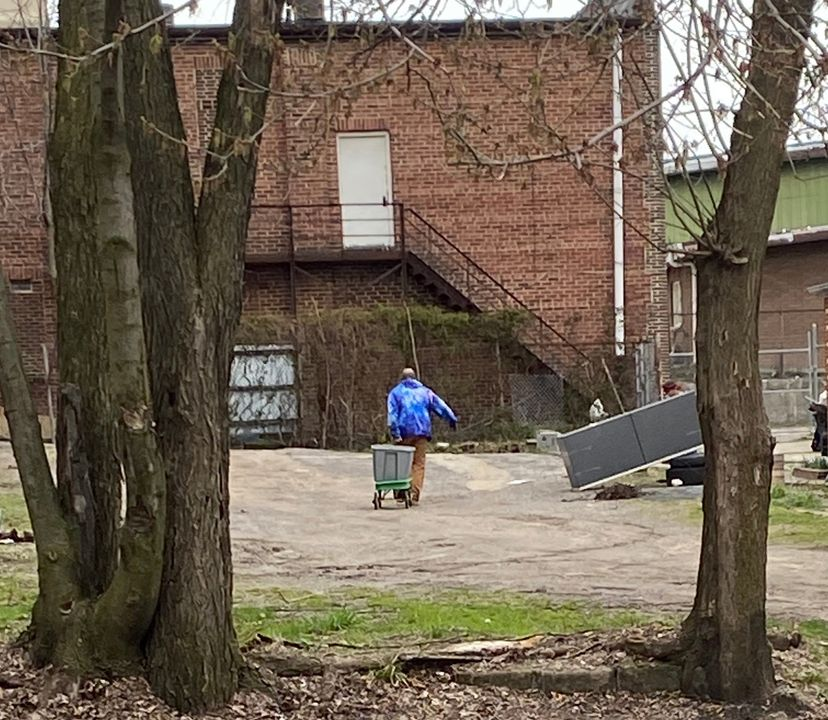

Timeline photos
This is a veteran hauling a wagon full of water. He doesn't have access to running water because he can't afford it. So he is now relegated to third-world status.
I let homeless people use the spigot on the side of my building to get water. My friend Patty spent 6 months in jail for "stealing" water from a Subway restaurant in Barberton.
Do you think there should be water stations around cities for people who don't have access to running water?